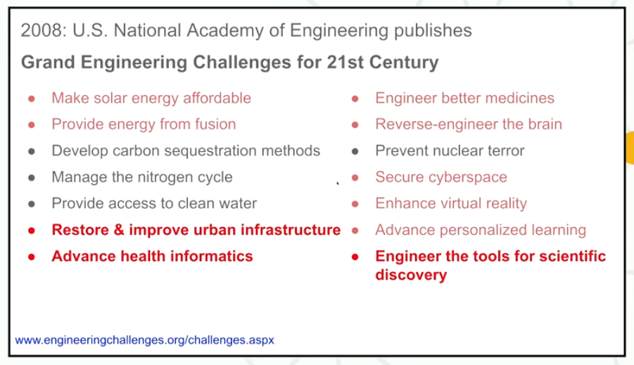

-
Lecture 1
Why study about the human brain?
- Brain vs Mind. Brain refers to the physical thing that you can touch. Mind refers to the abstract thing that the brain "contains".
- By understanding how the brain works, can we answer questions like: are there things that we might not be able to think? Possible true scientific theories that we might not
be able to understand, ever?
- Can the change in the structure of the brain change the structure of thought?
- Advance AI. For instance, visual object recognition was considered a very difficult problem, until this paper was published:
ImageNet Classification with Deep Convolutional Neural Networks in 2012.
By creating AI that can mimic human behavior, we can get a closer insight into how our own brains work, which in turn helps the development of even better AI and turns into a
nice feedback loop. Both humans and deep nets are pretty good at pattern recognition. What humans are good at, but machines are not, is
building models to understand our
world. Well not all humans, I guess.
- And because "it is the greatest intellectual quest of all time". Besides, "reverse-engineer the human brain" sounds metal af.

We want to answer questions like:
- What (if any) is special about the human brain? How do we get to think about these things, and other species don't?
- Where does knowledge come from? We know all this "stuff". How much of this stuff was wired into our brains (as a result of genetics), and how much of it did we get from
experience?
- Can we change the structure of the brain just by learning?
- Can we think without language?
- How much of our mind is subconscious? What goes on in the background when we are not paying attention?
- No one has a freaking clue about how we can get a bunch of neurons to understand the meaning of a particular sentence currently.
Themes of this course
- The brain is not an amorphous mush. It has organization and structure, where the different bits do different things.
- Some parts of the brain do
very specific things. Why do these things only get their dedicated parts, why don't others? Is it because the things that this part does
are very frequent, or is it that they are too involved?
- The organization of the brain mirrors the architecture of the mind. So the idea is that if we can explain the fundamental pieces of the brain, then that should help us
explain the fundamental pieces of the mind.
- How do brains change? Specifically, how do they change as we age? How do they change as we learn and experience new things? And how do they change if the brain suffers an
injury?
- So how will we go about studying the brain? We start by asking the question: "How does the brain give rise to the mind?". To answer this question we need to understand
what the mind is capable of. The mind can perform various functions like: perception, vision, cognition, hearing, language. For each of these functions, we want to find out
how this particular function is implemented in the brain. We will focus on the brain functions whose brain basis are best understood - in other words, concentrate on
functions about which we know the exact parts of the brain that are handling them. For example, about a third of the brain handles vision. So understanding vision will help
us understand how a major part of the brain works.
- For each of these functions we will ask the following questions:
a) To what extent is this process implemented in its own specialized brain hardware?
b) Do multiple brain regions contribute to this process?
c) If yes, then is there a division of labor between these regions?
d) How does this region/system develop?
e) Does this region have homologues in other species, or is it uniquely human?
- Note that memory is not being covered in this lecture. Refer
9.00 and 9.01 to understand
these.
- How are neurons wired together that help us create a picture in the brain from the actual object?
Intro to Neural Computation
Why study about the human brain
-